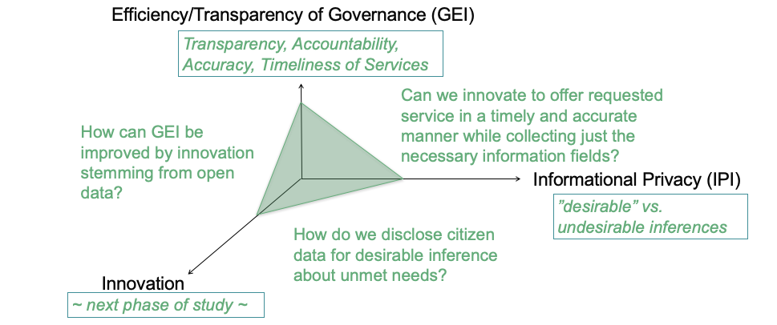

Our research tackles two important questions at the intersection of urban e-governance, citizen privacy, and innovation:
Study 1: How can cities (a state actor) use citizen data to maximize the governance while protecting the
citizen’s right to
privacy?
Study 2: How can cities (the data controller) disclose citizen data to enable innovations by non-state actors
while protecting
the citizen’s right to privacy?

Study 1
Privacy vs. Efficiency
Study 2
Privacy vs. Innovation
Study 1: Privacy vs. Efficiency
On August 24, 2017, a nine-judge Bench of the Supreme Court of India unanimously concluded that the right to personal privacy is a guaranteed fundamental right under the Constitution of India. We are studying two Tier II cities with population close to 1 million each that have successfully migrated to providing all of their municipal services by e-governance. While e-governance improves transparency and accountability, efficiency is hindered by the need for citizen privacy. This juxtaposition in India presented a unique opportunity to develop a framework for optimizing both. The heterogeneity of socioeconomic factors in India is especially conducive to widespread inequalities that may result from the lack of digital privacy. Through interactions with Indian state government officials and study of the e-governance platform used in an Indian state, we investigated how citizen data is collected, transferred, and used within the government. We extensively interviewed key city officials to understand the exact data use in decision-making. Based on this fieldwork, we create a matrix representing interdependencies between the citizen data collected for various citizen services and the city government actors and their functions necessary for providing the requested services. We (1) assess the cultural, functional, financial, and privacy implications of compromising the confidentiality or integrity of the data collected in each module; (2) derive a quantitative measure of how data collection limitation affects government services; and more generally (3) derive quantitative measures - Government Efficiency Index and Informational Privacy Index - to understand the interdependence of governance on informational privacy.
Study 2: Privacy vs. Innovation
How can cities (the data controller) open citizen data to enable innovations by non-state actors while protecting the citizen’s fundamental right to privacy?